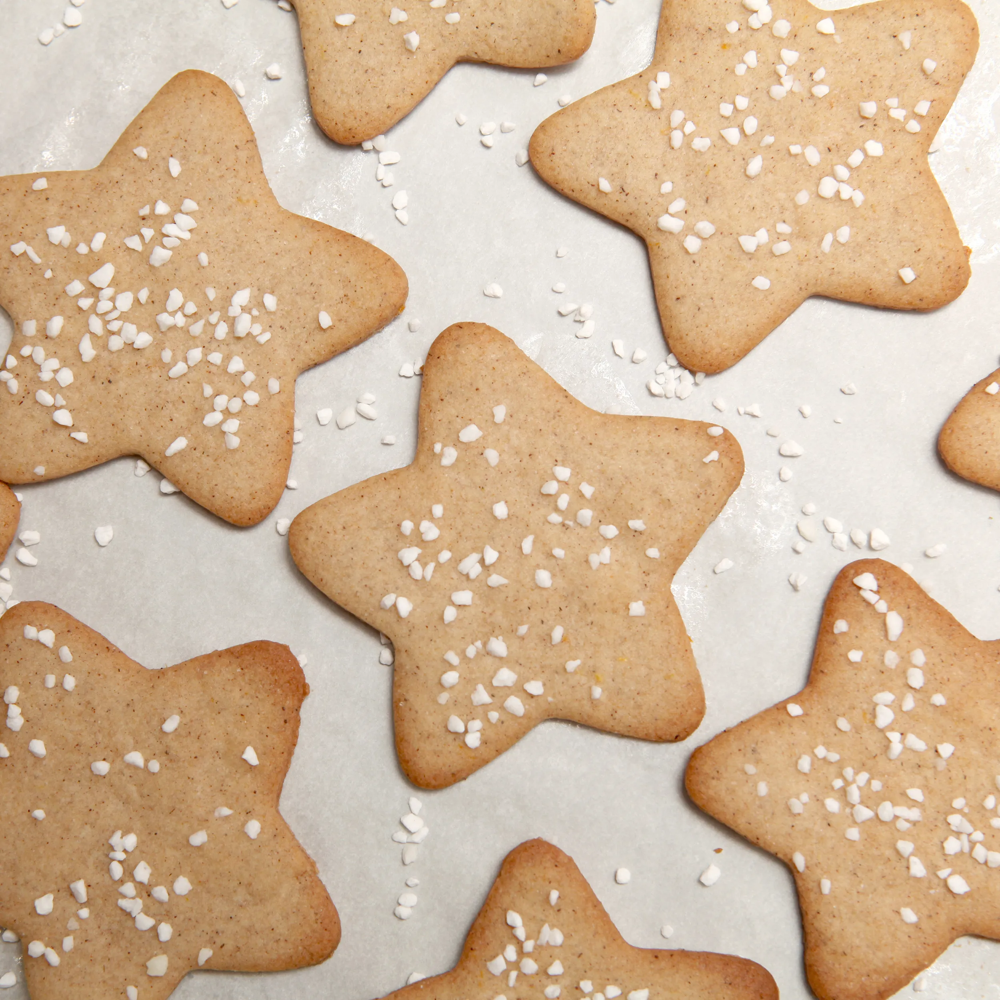

Swedish Black Pepper Cookies

These traditional Swedish cookies are a delightful blend of sweet and spicy flavors, featuring a hint of black pepper for a unique twist.
With their crisp edges and soft centers, they are perfect for enjoying with a cup of coffee or tea.
Simple to make and sure to impress, these cookies are a must-try for any baking enthusiast.
Ingredients:
- 3 ¾ cups all-purpose flour
- 2 teaspoons baking soda
- 1 teaspoon cinnamon
- 1 teaspoon ground cloves
- 1 teaspoon ground ginger
- 1 teaspoon ground cardamom
- 1 cup unsalted butter, softened
- 1 cup white sugar
- ½ cup brown sugar, packed
- 1 large egg, beaten
- 2 tablespoons dark corn syrup
Instructions:
- Sift flour, baking soda, cinnamon, cloves, ginger, and cardamom into a large bowl.
- In a separate bowl, beat butter, white sugar, and brown sugar until light and fluffy. Then beat in the egg and dark corn syrup until smooth. Gradually stir in the flour/spice mixture until evenly combined. Divide dough into four portions, wrap in plastic, and refrigerate at least 1 hour (or overnight).
- Preheat oven to 375 °F (190 °C). Lightly grease baking sheets.
- Working with one dough disk at a time (keep the others chilled), roll out on a lightly floured surface to about ⅛ inch thickness. Cut into shapes with cookie cutters, dipping cutters in flour to prevent sticking. Place shapes about 1 inch apart on prepared sheets.
- Bake for about 5 minutes, until set. Transfer cookies to a wire rack to cool. Repeat with remaining dough portions.